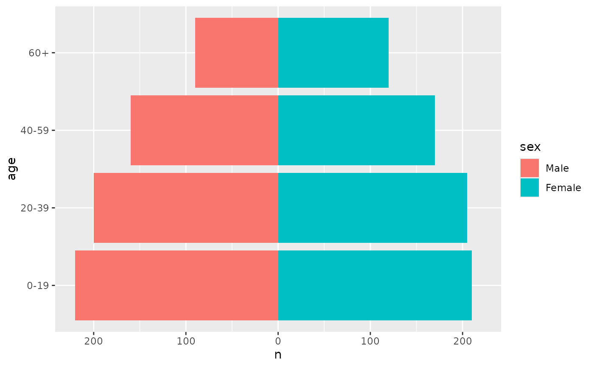
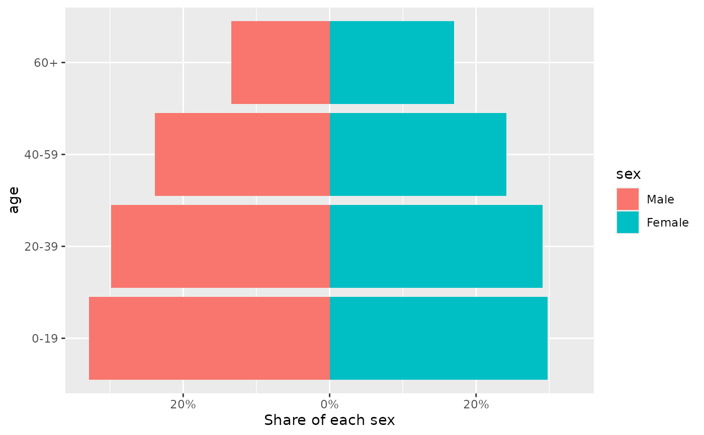

geom_pyramid() draws the bars of a population pyramid: one bar per age
group on each side, extending away from a shared age axis. It counts rows,
so it accepts individual records (aes(y = age, fill = sex)), and it sums a
value when one is mapped, so it also accepts aggregated data
(aes(x = n, y = age, fill = sex)). The bars are mirrored and stacked by
position_pyramid(), and every other part of the plot (scales, facets,
themes and further layers) comes from ggplot2 as usual.
Usage
geom_pyramid(
mapping = NULL,
data = NULL,
stat = "pyramid",
position = "pyramid",
...,
denominator = NULL,
just = 0.5,
na.rm = FALSE,
orientation = NA,
show.legend = NA,
inherit.aes = TRUE
)
stat_pyramid(
mapping = NULL,
data = NULL,
geom = "bar",
position = "pyramid",
...,
denominator = NULL,
na.rm = FALSE,
orientation = NA,
show.legend = NA,
inherit.aes = TRUE
)Arguments
- mapping
Set of aesthetic mappings created by
aes(). If specified andinherit.aes = TRUE(the default), it is combined with the default mapping at the top level of the plot. You must supplymappingif there is no plot mapping.- data
The data to be displayed in this layer. There are three options:
If
NULL, the default, the data is inherited from the plot data as specified in the call toggplot().A
data.frame, or other object, will override the plot data. All objects will be fortified to produce a data frame. Seefortify()for which variables will be created.A
functionwill be called with a single argument, the plot data. The return value must be adata.frame, and will be used as the layer data. Afunctioncan be created from aformula(e.g.~ head(.x, 10)).- stat
The statistical transformation to use on the data for this layer. The default,
"pyramid", isstat_pyramid().- position
A position adjustment. The default,
"pyramid", isposition_pyramid(); call it to set its arguments, for exampleposition = position_pyramid(left = "Female").- ...
Other arguments passed on to
ggplot2::layer(), such as the barwidthor fixed aesthetics likecolour = "white".- denominator
NULL(the default) shows counts."total"shows each bar as a proportion of all rows in the panel, and"side"as a proportion of the rows on its side.- just
Adjustment for column placement. Set to
0.5by default, meaning that columns will be centered about axis breaks. Set to0or1to place columns to the left/right of axis breaks. Note that this argument may have unintended behaviour when used with alternative positions, e.g.position_dodge().- na.rm
If
FALSE, the default, missing values are removed with a warning. IfTRUE, missing values are silently removed.- orientation
The orientation of the layer. The default (
NA) automatically determines the orientation from the aesthetic mapping. In the rare event that this fails it can be given explicitly by settingorientationto either"x"or"y". See the Orientation section for more detail.- show.legend
logical. Should this layer be included in the legends?
NA, the default, includes if any aesthetics are mapped.FALSEnever includes, andTRUEalways includes. It can also be a named logical vector to finely select the aesthetics to display. To include legend keys for all levels, even when no data exists, useTRUE. IfNA, all levels are shown in legend, but unobserved levels are omitted.- inherit.aes
If
FALSE, overrides the default aesthetics, rather than combining with them. This is most useful for helper functions that define both data and aesthetics and shouldn't inherit behaviour from the default plot specification, e.g.annotation_borders().- geom
The geometric object used to display the data.
Aesthetics
Age goes on y, or on x for a vertical pyramid. The value axis is
optional: when it is mapped, its values are summed within each age group,
and when it is not, rows are counted. weight multiplies either. The side
of each bar comes from side, or from fill when side is not mapped; see
position_pyramid().
Computed variables
These can be used with ggplot2::after_stat():
after_stat(count): the number of rows, or the sum of the value, in each age group. This is what the bars show by default.after_stat(prop):countas a proportion of all rows in the panel, or of the rows on the same side withdenominator = "side". Each facet panel has its own denominator. The bars showpropwheneverdenominatoris set.
See also
position_pyramid() to mirror other layers, and coord_pyramid()
for the axes of a pyramid.
Examples
library(ggplot2)
pop <- data.frame(
age = factor(rep(c("0-19", "20-39", "40-59", "60+"), 2)),
sex = factor(rep(c("Male", "Female"), each = 4), c("Male", "Female")),
n = c(220, 200, 160, 90, 210, 205, 170, 120)
)
# Aggregated data: the value is summed
ggplot(pop, aes(x = n, y = age, fill = sex)) +
geom_pyramid() +
coord_pyramid()

# Individual records: rows are counted
people <- pop[rep(seq_len(nrow(pop)), pop$n), c("age", "sex")]
ggplot(people, aes(y = age, fill = sex)) +
geom_pyramid()
# Percentages of each side
ggplot(pop, aes(x = n, y = age, fill = sex)) +
geom_pyramid(denominator = "side") +
scale_x_continuous(labels = scales::label_percent()) +
coord_pyramid() +
labs(x = "Share of each sex")
